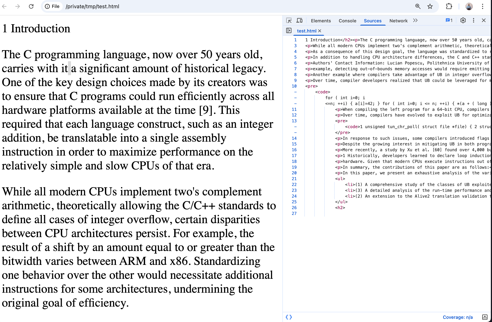
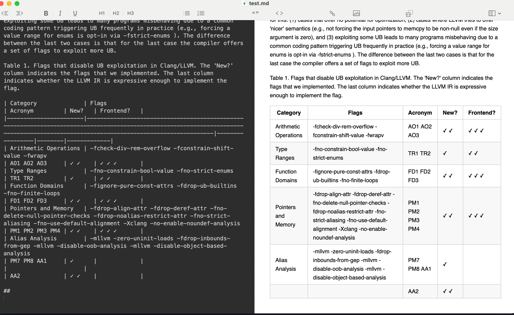
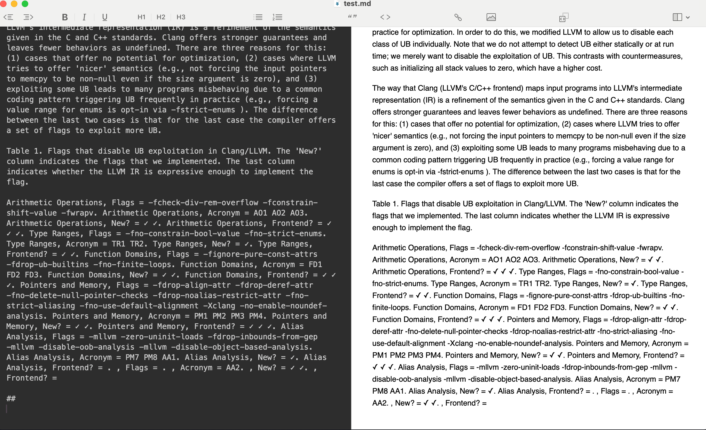

Serialization
A document serializer is a Docling abstraction that is initialized with a given DoclingDocument and returns a textual representation for that document in various standard formats (HTML, Markdown, JSON etc). They serve as a bridge between Docling’s internal representations and external tools, databases, or storage/file formats.
Serializers are components responsible for converting processed document objects (like chunked documents or embedding results) into formats that can be saved, transferred, or indexed, typically for use in downstream applications like LLM pipelines, vector databases, or search systems.
Docling defines abstractions for several objects in the contained within the DoclingDocument, for example, text serializer, table serializer, picture serializer, list serializer, and more. You can also extend the base Docling serializer classes and write your own custom serializer for any other output format that you need.
This functionality is crucial for preparing documents for use in Generative AI applications, such as Retrieval-Augmented Generation (RAG), LLM fine-tuning, and question-answering systems.
Docling provides out-of-the-box serializers for several popular formats, including:
-
Markdown
-
HTML
-
JSON
Lab: Docling Serializers
Pre-requisites
-
The Docling Python library must be installed as outlined in the previous sections using
pipin a Python virtual environment -
Git CLI to clone the sample data files from GitHub
-
Visual Studio Code, or other editors to edit Python code
Steps
-
If you have not already done it, clone the Git repository containing the sample documents that should be converted, to a folder of your choice.
$ git clone https://github.com/RedHatQuickCourses/genai-apps.git -
All the sample input files and code is in a folder called
dataprep. Change to this folder in the terminal.$ cd genai-apps/dataprep -
If you have previously created a virtual environment and installed Docling, activate the venv.
$ source venv/bin/activateYour prompt should change to indicate that you are now running in an isolated virtual environment.
-
Inspect the
serializers.pyfile in VS Code. The input document issample-data/ub-pldi25.pdf. The serialized ouptut will be printed to the terminal.... INPUT_DOC = Path("sample-data/ub-pldi25.pdf") ... -
Scroll all the way to the bottom of the file. This file contains three methods, demonstrating the HTML serializer, followed by the Markdown Serializer, and the Markdown Serialzer with customization respectively. The last two methods are commented out initially.
... if __name__ == "__main__": html_serializer() #markdown_serializer() #markdown_serializer_custom() ... -
Inspect the
html_serializer()method. Let’s say you want to grab theIntroductionsection of the input document and serialize it to HTML. You can use the defaultHTMLDocSerializerto output HTML snippets. Thestart_html_cueandstop_html_cuemarkers indicate the starting and ending points in the document which must be extracted.... converter = DocumentConverter() doc = converter.convert(source=INPUT_DOC).document (1) serializer = HTMLDocSerializer(doc=doc) (2) ser_result = serializer.serialize() ser_text = ser_result.text print(ser_text[ser_text.find(start_html_cue) : ser_text.find(stop_html_cue)]) (3) ...1 Input document converted to DoclingDocumentobject2 Pass the converted DoclingDocumentobject to the serializer3 Extract the text between the start and end markers -
Run the program. You can safely ignore any warnings emitted. The HTML output is printed to the terminal. You can redirect the output to a file and inspect it. Note that only the
Introductionsection is extracted and serialized.$ (venv) python3 serializers.py ...Figure 2. HTML Serializer output -
Next, inspect the
markdown_serializer()method. Note the use of theMarkdownDocSerializer.... serializer = MarkdownDocSerializer(doc=doc) ... -
Before running the script, comment the
html_serializer()method, and uncomment themarkdown_serializer()method call at the bottom of the file as follows:... if name == "main": #html_serializer() markdown_serializer() #markdown_serializer_custom() -
Run the script once again. The output is in Markdown format.
Figure 3. Markdown serializer output -
Finally, inspect and run the
markdown_serializer_custom()method. We customize the Markdown serializer by asking it to serialize the tables not in the default markdown style, but in what is calledTriplettable format, which is amenable for ingestion into certain LLMs and provides better semantic lookup results in RAG pipelines. Don’t forget to uncomment themarkdown_serializer_custom()method before running.... serializer = MarkdownDocSerializer( doc=doc, table_serializer=TripletTableSerializer(), ) ...Figure 4. Triplet Table Serializer output